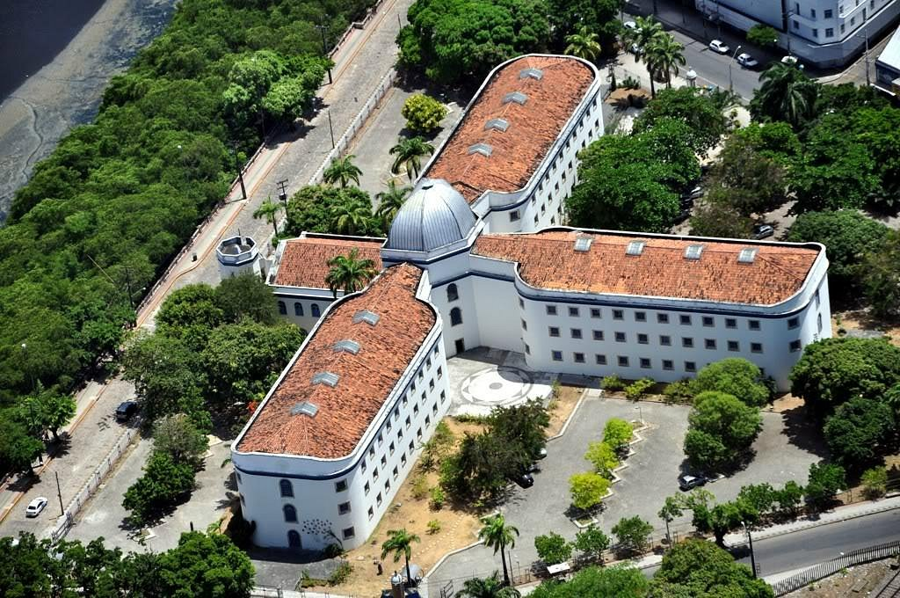

Fortaleza das Cinco Pontas

A Fortaleza das Cinco Pontas é um dos principais pontos turísticos do Recife Antigo. Construída no século XVII pelos holandeses, ela serviu como prisão e quartel general do Exército Brasileiro. Atualmente, é um espaço cultural que abriga exposições, espetáculos e eventos.
Casa da Cultura
A Casa da Cultura é um antigo presídio que foi transformado em um centro cultural. Inaugurada em 1976, ela abriga diversas lojas de artesanato, música, roupas e gastronomia. Além disso, a Casa da Cultura também possui um teatro e um cinema.